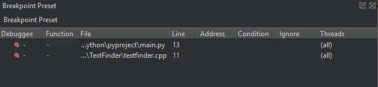
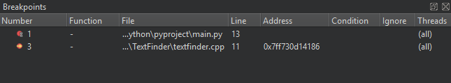
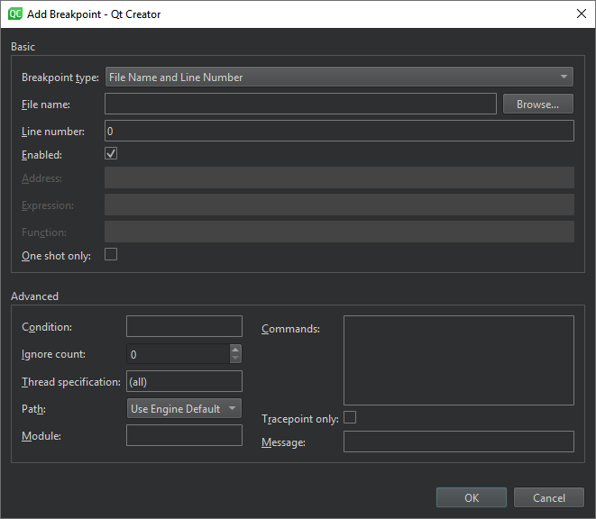

Setting Breakpoints
You can associate breakpoints with:
- Source code files and lines
- Functions
- Addresses
- Throwing and catching exceptions
- Executing and forking processes
- Executing some system calls
- Changes in a block of memory at a particular address when an application is running
- Emitting QML signals
- Throwing JavaScript exceptions
A breakpoint interrupts the application every time the application reaches its location unless you specify a boolean condition for it. The breakpoint evaluates the expression each time the application passes it, and the application stops only if the condition evaluates to true.
Unclaimed and Claimed Breakpoints
Breakpoints come in two varieties: unclaimed and claimed. An unclaimed breakpoint represents a task to interrupt the debugged application and passes the control to you later. It has two states: pending and implanted.
Unclaimed breakpoints are stored as a part of a session and exist independently of whether an application is being debugged or not. They are listed in the Breakpoint Preset view and in the editor using the (Unclaimed Breakpoint) icon, when they refer to a position in code.

When a debugger starts, the debugging backend identifies breakpoints from the set of unclaimed breakpoints that might be handled by the debugged application and claims them for its own exclusive use. Claimed breakpoints are listed in the Breakpoints view of the running debugger. This view only exists while the debugger is running.
When a debugger claims a breakpoint, the unclaimed breakpoint disappears from the Breakpoint Preset view, to appear as a pending breakpoint in the Breakpoints view.
At various times, attempts are made to implant pending breakpoints into the debugged process. Successful implantation might create one or more implanted breakpoints, each associated with an actual address in the debugged breakpoint. The implantation might also move a breakpoint marker in the editor from an empty line to the next line for which the actual code was generated, for example. Implanted breakpoint icons don't have the hourglass overlay.
When the debugger ends, its claimed breakpoints, both pending and implanted, will return to the unclaimed state and re-appear in the Breakpoint Preset view.
When an implanted breakpoint is hit during the execution of the debugged application, control is passed back to you. You can then examine the state of the interrupted application, or continue execution either line-by-line or continuously.

Adding Breakpoints
To add breakpoints:
- Add a new breakpoint in one of the following ways:
- In the code editor, click the left margin or press F9 (F8 on macOS) on a particular line you want the application to stop.
- In the Breakpoint Preset view or the Breakpoints view:
- Double-click the empty part of the view.
- Right-click the view, and select Add Breakpoint in the context menu.
- In the Breakpoint type field, select the location in the application code where you want the application to stop.

Deselect the Enabled check box to make the breakpoint temporarily inoperative as if you had deleted it, but keep the information about the breakpoint, so that you can enable it again later.
The other options to specify depend on the location you select, such as file name and line number, address, expression, or function name. The following table summarizes the advanced options.
| Option | Value |
|---|---|
| Condition | The condition to evaluate before stopping at the breakpoint if the condition evaluates as true. |
| Ignore count | The number of times to ignore the breakpoint before the application stops. |
| Thread specification | |
| Path | Determines how to specify the path when setting breakpoints:
|
| Module | Specify the module (base name of the library or executable) for function or file type breakpoints to speed up debugger startup (CDB, LLDB). |
| Commands | Commands to execute when the application stops. List one command per line. GDB executes the commands in the order in which you specify them. |
| Tracepoint only | A tracepoint lets you log information about the application without adding log statements or otherwise modifying your code. You can set conditions for the tracepoint. |
| Message | The tracepoint message to show in Application Output. |
Moving Breakpoints
To move a breakpoint:
- Drag and drop a breakpoint marker to another line in the text editor.
- In the Breakpoint Preset view or the Breakpoints view, select Edit Selected Breakpoints, and set the line number in the Line number field.
Deleting Breakpoints
To delete breakpoints:
- Click the breakpoint marker in the text editor.
- In the Breakpoint Preset view or the Breakpoints view:
- Select the breakpoint and press Delete.
- Select Delete Selected Breakpoints, Delete Selected Breakpoints, or Delete Breakpoints of File in the context menu.
Enabling and Disabling Breakpoints
To temporarily disable a breakpoint without deleting it and losing associated data like conditions and commands:
- Right-click the breakpoint marker in the text editor and select Disable Breakpoint.
- Select a line that has a breakpoint and press Ctrl+F9 (Ctrl+F8 on macOS).
- In the Breakpoint Preset view or the Breakpoints view:
- Select the breakpoint and press Space.
- Select Disable Breakpoint in the context menu.
A hollow breakpoint icon in the text editor and the views indicates a disabled breakpoint. To re-enable a breakpoint, use any of the above methods.
Other than data breakpoints retain their enabled or disabled state when the debugged application is restarted.
Setting Data Breakpoints
A data breakpoint stops the application when data is read or written at the specified address.
To set a data breakpoint at an address:
- In the Breakpoint Preset or Breakpoints view, select Add Breakpoint in the context menu.
- In the Breakpoint type field, select Break on data access at fixed address.
- In the Address field, specify the address of the memory block.
- Select OK.
If the address is displayed in the Locals or Expressions view, you can select Add Data Breakpoint at Object's Address in the context menu to set the data breakpoint.
Data breakpoints will be disabled when the debugged application exits, as it is unlikely that the used addresses will stay the same at the next application launch. If you really want a data breakpoint to be active again, re-enable it manually.